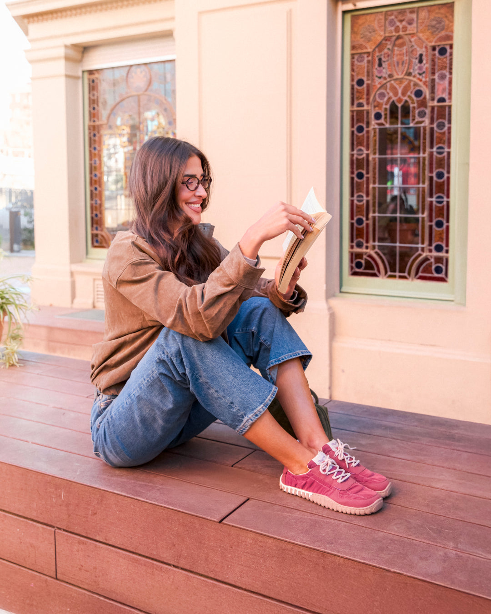
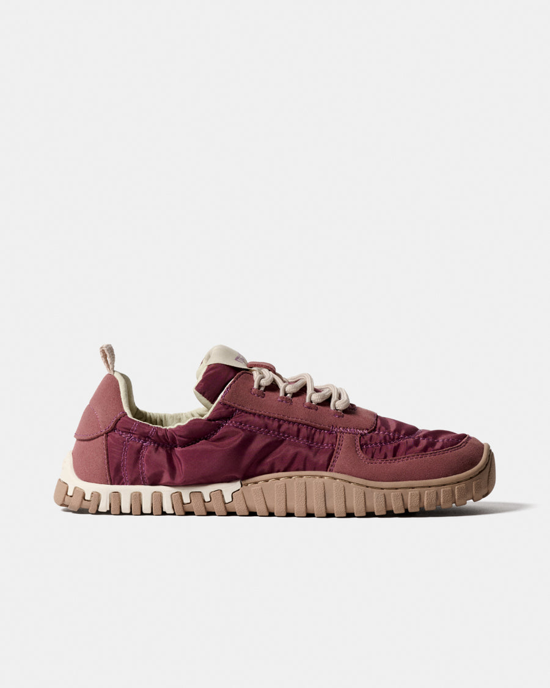
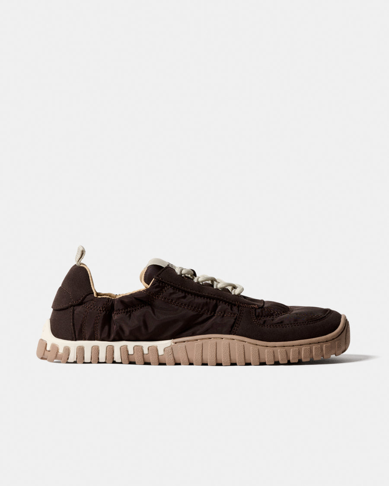
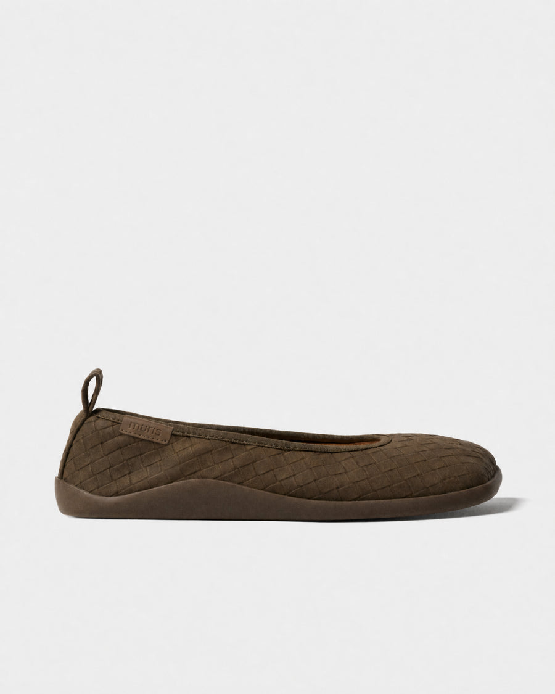

Camina como si nunca hubieras dejado de ser libre.
Zapatillas barefoot de origen vegetal para mujeres que no piensan renunciar a la naturalidad de su paso. Cero drop, suela flexible, cero crueldad animal.

de los problemas de pie en adultos están ligados a calzado rígido y estrecho. Cada Muris se diseña para romper ese molde, no para seguirlo.
No fuiste hecha para seguir caminos. Fuiste hecha para crearlos.
Así diseñamos cada par: para devolverle a tu pie la libertad que el calzado convencional le quita.
Libertad para tu pie
Suela flexible y cero drop que deja que tu pie se mueva, sienta y se fortalezca como fue diseñado, no como el calzado rígido lo obliga.
100% vegano y plant-based
Materiales de origen vegetal, sin cuero ni crueldad animal. Cuidamos tu paso y el planeta que pisas, en cada capa del zapato.
Salud desde la base
Un pie libre es un cuerpo más equilibrado. Menos rigidez, más movimiento natural, de la planta del pie hacia arriba.
Tres pares para tres formas de caminar.

Nueva

Historias reales de un paso distinto.
Llevo tres meses con mis Verona y no recuerdo la última vez que sentí los pies así de libres al final del día.
Clienta Muris WomanPasé del escepticismo a no querer volver a un zapato rígido. Se nota en cómo camino y en cómo descanso el pie.
Clienta Muris WomanTu primer paso, con un 10% menos.
Estrena tu primer par de la colección Woman con el código MURISWOMAN10. Solo para nuevas clientas Muris.
Canjear en la colección Woman